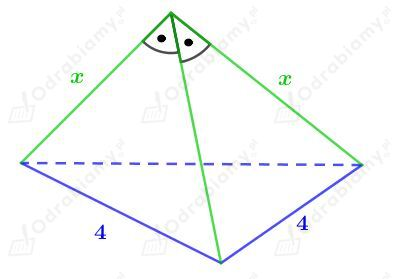
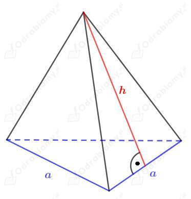
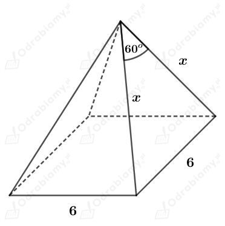
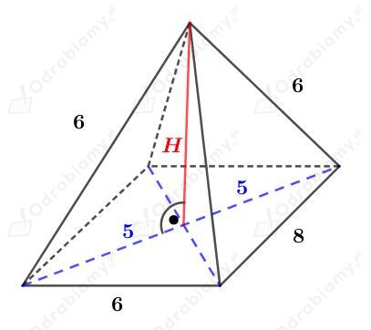
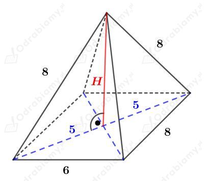

| Ostrosłup nazywamy prostym, jeśli wszystkie jego krawędzie boczne mają tę samą długość. Jeśli podstawą ostrosłupa prostego jest wielokąt foremny, to taki ostrosłup nazywamy prawidłowym. |
| Pole powierzchni całkowitej ostrosłupa jest równe sumie pola powierzchni jego podstawy i pola powierzchni bocznej. |
Rysunek:

Obliczmy pole powierzchni podstawy tego ostrosłupa. Korzystając ze wzoru na pole trójkąta równobocznego mamy:
Korzystając z twierdzenia Pitagorasa mamy:
Obliczmy pole powierzchni bocznej tego ostrosłupa. Mamy:
Obliczmy pole powierzchni całkowitej tego ostrosłupa. Mamy:
| Ostrosłup nazywamy prostym, jeśli wszystkie jego krawędzie boczne mają tę samą długość. Jeśli podstawą ostrosłupa prostego jest wielokąt foremny, to taki ostrosłup nazywamy prawidłowym. |
| Pole powierzchni całkowitej ostrosłupa jest równe sumie pola powierzchni jego podstawy i pola powierzchni bocznej. |
Rysunek:

Wiemy, że pole powierzchni podstawy tego ostrosłupa wynosi 25√3 cm2.
Korzystając ze wzoru na pole trójkąta równobocznego otrzymujemy równanie:
Wiemy, że pole powierzchni całkowitej jest siedmiokrotnie większe od pola powierzchni podstawy, czyli
Korzystając ze wzoru na pole powierzchni całkowitej ostrosłupa otrzymujemy:
Powierzchni boczna zbudowana jest z trzech trójkątów równoramiennych o podstawie długości 10 cm i wysokości długości h. Stąd mamy:
| Ostrosłup nazywamy prostym, jeśli wszystkie jego krawędzie boczne mają tę samą długość. Jeśli podstawą ostrosłupa prostego jest wielokąt foremny, to taki ostrosłup nazywamy prawidłowym. |
| Kątem płaskim przy wierzchołku ostrosłupa prawidłowego nazywamy kąt między ramionami trójkąta równoramiennego będącego ścianą boczną tego ostrosłupa. |
| Pole powierzchni całkowitej ostrosłupa jest równe sumie pola powierzchni jego podstawy i pola powierzchni bocznej. |
Rysunek:

Kąt między ramionami trójkąta będącego ścianą boczną ma miarę 60°. Obliczmy, jaką miarę mają kąty przy podstawie:
Wszystkie kąty w tym trójkącie mają miarę 60°, co oznacza, że ten trójkąt jest trójkątem równobocznym o boku długości 6 cm.
Wyznaczmy pole powierzchni całkowitej tego ostrosłupa. Mamy:
| Ostrosłup prawidłowy trójkątny, którego wszystkie ściany są trójkątami równobocznymi, nazywamy czworościanem foremnym. |
a)
Dany jest czworościan foremny, którego krawędź ma długość 5 cm.
Taki czworościan foremny zbudowany jest z czterech trójkątów równobocznych o boku długości 5 cm.
Wyznaczmy pole powierzchni całkowitej tego czworościanu foremnego. Korzystając ze wzoru na pole trójkąta równobocznego mamy:
b)
Dany jest czworościan foremny, którego krawędź ma długość a.
Taki czworościan foremny zbudowany jest z czterech trójkątów równobocznych o boku długości a.
Wiemy, że pole powierzchni całkowitej tego czworościanu jest równe 49√3 cm2. Stąd otrzymujemy równanie:
Czworościan ma 6 krawędzi. Każda z tych krawędzi ma długość 7 cm. Obliczmy sumę długości tych krawędzi:
Przedstawiono fragment siatki ostrosłupa prostego.
Z rysunku odczytujemy, że podstawą ostrosłupa jest prostokąt o wymiarach 8 x 5.
Ostrosłup jest prosty, więc wszystkie krawędzie boczne mają jednakową długość. Z rysunku odczytujemy, że krawędź boczna ma długość 5.
Mamy więc dwie ściany boczne będące trójkątami równobocznymi o boku długości 5 oraz dwie ściany boczne będące trójkątami równoramiennymi o podstawie długości 8 i ramieniu długości 5.
Korzystając z twierdzenia Pitagorasa obliczmy długość wysokości h drugiego z tych trójkątów:
Obliczmy pole powierzchni bocznej tego ostrosłupa. Mamy:
Obliczamy pole powierzchni całkowitej tego ostrosłupa. Mamy:
Dany jest ostrosłup prosty, którego podstawą jest prostokąt o bokach długości 6 cm i 8 cm.
Niech x będzie długością przekątnej podstawy.
Korzystając z twierdzenia Pitagorasa mamy:
I przypadek
Ostrosłup ma dwie ściany boczne będące trójkątami równobocznymi o boku długości 6 cm.

Korzystając z twierdzenia Pitagorasa mamy:
Drugi przypadek
Ostrosłup ma dwie ściany boczne będące trójkątami równobocznymi o boku długości 8 cm.

Korzystając z twierdzenia Pitagorasa mamy: